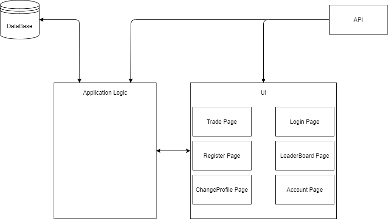
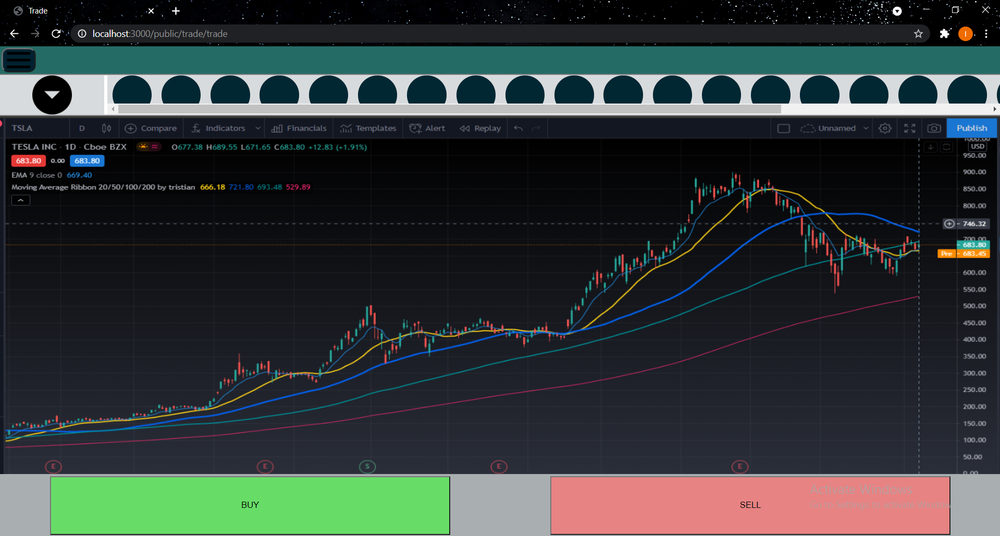
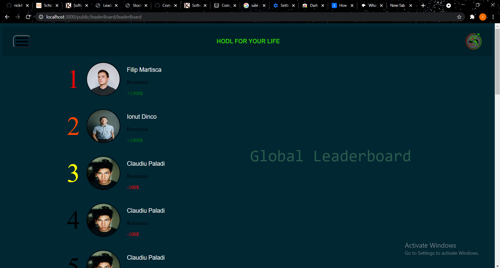

Stock-Simulator
Authors
- Martisca Filip
- Dinco A. Ionut
- Paladi Claudiu
1.Introduction
-
1.1 Purpose
In this document we will present the "stock-simulator" project v1.0. This project aims to help investment beginners to become familiar with the system without losing equity.
-
1.2 Document Conventions
This project will use an API to retrieve stock price data and a DB to store information about each user.
-
1.3 Intended Audience and Reading Suggestions
"Stock-Simulator" is useful for all people who want to trade on the stock market but also for people who are already familiar with the stock market, to strengthen their investment strategies.
-
1.4 Product Scope
First of all, the purpose of the project is to give users an easy-to-use interface with useful statistics and information. One benefit is to remove the influence of emotions by using virtual money, and the goal is to familiarize as many people with the stock market, becauze money is an important part of our lives that many people neglect.
-
1.5 References
- #web Tehnologii Web , by Sabin Buraga
- Web Technologies , by Alexandru Pavaloi
2.Overall Description
-
2.1 Product Perspective
There are already demo accounts in broker applications but they are often too complicated for a person who has never invested. "Stock-Simulator" brings the investment experience but in a minimal way.
 -
2.2 Product Functions
The main functions of the application is to sell and buy shares in order to make a profit and to store the user's evolution in the investment world.
-
2.3 User Classes and Characteristics
There are two types of users:
- - Those who invest for the first time.
- - Those who have invested before.
Both classes of people have access to the same content of the application.
-
2.4 Operating Environment
- Web Application
- Operating System: Windows, Linux, macOS...
-
2.5 Design and Implementation Constraints
- Design flexibly. We accounted for the fact that spectators will stretch and distort our designs.
- We Create a unique page design and content for full-sized and mobile sites.
-
2.6 User Documentation
1) Login/Register
If you want to use an existing account, just log in .

oterwise, register

2) Enjoy the application
After log in, you will reach the trade page where all the action begins.

You can view your profile and statistics about your performance using the tread page menu.
and here is your Profile Page
In addition, you can access the global ranking page and find out your position and that of other users, using the same menu.

... or to change your account (if you have more than one)
-
2.7 Assumptions and Dependencies
- This web application uses cookies to improve user experience
- This web application uses real-time information about the exchange rate of currencies used in transactions.
- Users need to create an account and be logged in order to use the web application.
3.External Interface Requirements
-
3.1 User Interfaces
Next, I included sample screen images in order to describe the logical characteristics of each interface between the software product and the users.
On the profile page you can report a problem at any time using the feedback button that will open a small chat.
You will also be able to choose one of the two types of currencies available for transactions using the button that has the current currency sign on it.
On the trading page you will make transactions using the sell and buy buttons.You can choose the best bussines to invest in from the top bar or you can search for others using the search button
On the Change account page, you can simply sign in with another account by clicking on the avatar of the account you want.
-
3.2 Hardware Interfaces
It is a responsive web application, therefore it supports several types of devices:
- Desktop devices
- Laptops
- Mobile devices
- Tablet devices
-Regardless of the resolution of the display.
-The server-client communication will be done using an open-source web server, Apache HTTP Server .
-
3.3 Software Interfaces
-The web application communicates with an API in order to retrieve stock price data , and with the database in order to get the user's registration data and the data that capture his evolution in trading.
-The communication between the database and the website consists of operation concerning both reading and modifying the data.
-We also use an RSS feed to generate a ranking of the most successful users.
-
3.4 Communications Interfaces
The web application uses HTTP: Hyper Text Transfer Protocol for communication between web browser and web server
Advantages
- Memory usage and CPU usage are low because of lesser concurrent connections.
- Errors can be reported without closing connections.
- Owing to lesser TCP connections, network congestion is reduced.
Disadvantages
- HTTP lacks encryption capabilities, making it less secure.
-You can contact us using the email addresses and teleon numbers presented at the beginning of the html document.
4.System Features
-
Description and Priority
Selling and buying shares is very important because it is a pillar of the world economy. This project has a medium priority because it is good to invest, but it is not mandatory.
-
Stimulus/Response Sequences
-Sell/Buy Stocks
-View LeaderBoard
-View Statistics
-
Functional Requirements
In case of incorrect input, an error page will appear.
5.Other Nonfunctional Requirements
-
Performance Requirements
Internet Connection
-
5.2 Safety Requirements
If the API can no longer be used, we will need to connect the application to another source of information about stock prices
-
5.3 Security Requirements
The application will be used only if you have a user account, otherwise you will have to create one.
-
5.4 Software Quality Attributes
-Correctness: The application should contain real-time data.
-Availability: The application will be avaible from almost any browser.
-
5.5 Business Rules
This application was built with an educational role.